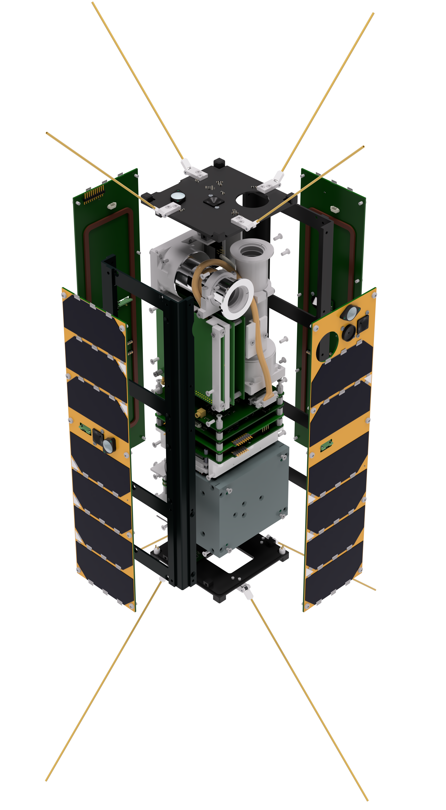

The Foresail-1p is a Finnish 3U Cubesat mission developed by Aalto University in association with the FORESAIL consortium.
It is a successor to the failed Foresail-1 mission, to fill its science and technology demonstration goals.
The mission involves both space science and radio amateur prospects, with scientific payloads such as the Particle Telescope (PATE) and
Plasma Brake Experiment (PB).
Foresail-1p also has an additional camera and magnetometer payload used to monitor spacecraft operations and
characterize the magnetic field environment in orbit.
It was launched in November of 2025 on-board the Space-X Transporter 15 mission from Space Launch Complex 4E (SLC-4E) at Vandenberg Space Force Base in California.
The satellite was released to LEO a bit later, on the 9th of December from D-Orbit's ION Space Carrier Vehicle.
Its deployment was successful and the mission is now in commisioning phase.
PATE was developed at the University of Turku, with a goal to further help us understand the radiation environment of space, and what
satellites must endure throughout their mission lifetime. In addition to its scientific value, PATE could also provide a pathway to
designing more radiation resistant satellite platforms in the future.
More accurate measurements from the PATE instrument will help us determine exactly how electrons exit and enter the radiation zones
into the atmosphere.
The Plasma Brake payload is a technical experiment aimed to be utilized for satellite deorbiting at the end of the satellites life.
It functions by extending a thin tether, which is brought to a high voltage. This voltage interacts with the surrounding plasma
environment of the ionosphere to produce a torqure, which can be used to influence the orbit of the spacecraft.
The plasma brake has a mass of around 600 g and carries on-board approximately 60 m of the aluminum tether, which will be used for the
experiment. The tether itself is comprised of 4 thin wires, with a cross sectional diameter of only 50 micrometers.
The goal of the plasma brake experiment is to provide a viable and cost-effective solution for spacecraft deorbiting in lower orbits.
This issue is especially important considering the evergrowing space debris problem around our atmosphere.
MATTI is a COTS-based magnetometer designed to aid in the operation of PATE. In addition, to its role in providing pitch angle
information to PATE, MATTI will also test the limits of COTS-based component and their system resolutions.
The payload has been designed in-house at Aalto University, complete with propretary hardware and firmware.
For radio amateurs the mission demonstrates a new Skylink framing protocol for easy and reliable satellite communication.
Radio amateurs can work with satellite using a repeater virtual channel in the Skylink protocol.
Inside these frames Foresail-1p utilizes a procotol called Skylink, unchanged from Foresail-1. The Skylink protocol implements the following specifications
Foresail-1 Prime
1 66778U 25276DS 26026.27044162 .00008860 00000-0 45018-3 0 9991
2 66778 97.4359 102.1966 0001443 209.5400 150.5752 15.17104233 8875
Responsible Leader: Professor Jaan Praks (jaan.praks@aalto.fi)
Chief Engineers: